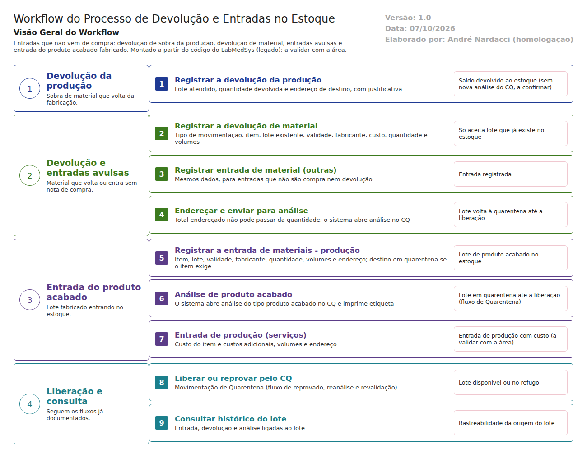

Objetivo
Este documento descreve as entradas no estoque que não vêm de compra: a devolução de sobra da produção, a devolução de material, as entradas avulsas ("outras") e a entrada do produto acabado fabricado.
Foi montado a partir do código do sistema legado. O que depende da prática da área está marcado como a validar. Os casos de teste estão no fim.
Escopo
- Devolução da produção (sobra de material atendido).
- Devolução de material e entrada de material (outras).
- Entrada do produto acabado (Entrada de Materiais - Produção) e entrada de produção de serviços.
- Encaminhamento para a análise do Controle da Qualidade.
Fora do escopo: o recebimento por nota fiscal de compra (fluxo da equipe), a liberação pelo Controle da Qualidade (fluxo de reprovado, reanálise e revalidação) e a fabricação em si (módulo Produção).
Nomes das telas: como aparecem no alto de cada tela. A tela de lista "Devolução de Material" muda de título conforme a opção do menu: Devolução de Material, Entrada de Material - Outras ou Entrada de Material - Produção (estoque/devolucao_lst.aspx.cs:34-38).
Visão geral do processo

A sobra de material que volta da fabricação é registrada na Devolução da Produção, com a quantidade e o endereço de destino. O material que volta de outra origem é registrado na Devolução de Material, que só aceita um lote que já existe no estoque. Entradas que não são compra nem devolução vão pela Entrada de Material - Outras. Nesses dois últimos casos, o sistema abre uma análise no Controle da Qualidade, e o lote volta à quarentena até ser liberado.
O produto acabado entra pela Entrada de Materiais - Produção: item, lote, validade, quantidade e endereço. Se o item exige quarentena, só são oferecidos locais de quarentena. O sistema abre a análise do tipo produto acabado e imprime a etiqueta. A liberação segue o fluxo de Quarentena.
Descrição funcional das etapas
"A numeração das regras de negócio é reiniciada em cada atividade, visando facilitar sua identificação e manutenção."
Devolução da produção
Regras de negócio
- RN001 – Exige quantidade, almoxarifado, local, rua, coluna e andar, e justificativa (
estoque/devolucao_producao_ed.aspx, validadores). - RN002 – A lista de destinos respeita as exigências do item: quarentena, umidade e refrigeração (
devolucao_producao_ed.aspx.cs:341). - RN003 – O código não abre análise do Controle da Qualidade na devolução da produção: o material volta direto ao saldo. A validar com a área e a Garantia da Qualidade: se a sobra devolvida precisa de avaliação antes de ser usada de novo, por exemplo quando a embalagem foi aberta.
Telas do sistema
| Módulo | Tela | Finalidade |
|---|---|---|
| Estoque | Devolução da Produção | Devolver sobra de material atendido |
Devolução de material e entradas avulsas
Regras de negócio
- RN001 – Exige tipo de movimentação, item, lote, validade, fabricante, custo unitário, quantidade, quantidade do volume, endereço e justificativa (
estoque/devolucao_ed.aspx,entrada_material_ed.aspx). - RN002 – Na devolução, o lote informado precisa já existir no estoque com o mesmo item, validade e fabricante (
devolucao_ed.aspx.cs:724-735,LoteValido). Isso garante a rastreabilidade do lote devolvido. - RN003 – O total endereçado não pode passar da quantidade do item ("Quantidade total endereçada não pode ser maior que a quantidade do item."). Na entrada avulsa, o mesmo item, lote e fabricante não pode repetir na lista.
- RN004 – Ao salvar, o sistema abre análise no Controle da Qualidade para os lotes (
devolucao_ed.aspx.cs:193,entrada_material_ed.aspx.cs:322).
Telas do sistema
| Módulo | Tela | Finalidade |
|---|---|---|
| Estoque | Devolução de Material | Material que volta ao estoque |
| Estoque | Entrada de Material - Outras | Entrada que não é compra nem devolução |
Entrada do produto acabado
Regras de negócio
- RN001 – Exige item, lote, validade, fabricante, quantidade, quantidade do volume e endereço (
estoque/entrada_producao_ed.aspx, validadores). - RN002 – Se o item exige controle de quarentena, a lista de destinos mostra só locais de quarentena (
entrada_producao_ed.aspx.cs:268-291). - RN003 – Ao salvar, o sistema abre análise do tipo produto acabado no Controle da Qualidade e imprime a etiqueta se o item tem controle de qualidade (
entrada_producao_ed.aspx.cs:163-166). - RN004 – A Entrada de Produção (serviços) exige custo do item, custos adicionais (FR170 e FR180), volumes e endereço. A validar com a área: quando é usada (produção terceirizada?) e o que são os custos FR170 e FR180.
Telas do sistema
| Módulo | Tela | Finalidade |
|---|---|---|
| Estoque | Entrada de Materiais - Produção | Entrada do lote fabricado |
| Estoque | Entrada de Produção | Entrada de produção com custos (serviços) |
Pontos de atenção
- A conferência do lote do produto acabado está desligada. A chamada que validava lote, validade e fabricante foi comentada (
entrada_producao_ed.aspx.cs:579). O lote é digitado livremente. O código não mostra ligação com o lote gerado na ordem de produção. É preciso confirmar no teste se é possível dar entrada de um lote de produto acabado que não existe na Produção. Isso quebraria a rastreabilidade do medicamento exigida pela RDC 658/2022. - Destino em quarentena garantido só pela lista da tela, como nos outros fluxos.
Casos de teste
Dados: TESTE MATERIA PRIMA com o lote TESTELOTE001 disponível e já atendido numa solicitação (fluxo de solicitação, CT-EST-079); um item de produto acabado TESTE PRODUTO ACABADO com controle de quarentena (cadastros de apoio); locais TESTE.
| Caso | O que fazer | Resultado esperado |
|---|---|---|
| CT-EST-090 | Devolução da Produção: devolver parte do TESTELOTE001 atendido, com justificativa |
Saldo volta ao endereço escolhido; aparece no histórico do lote |
| CT-EST-091 | Ver se a devolução da produção abriu análise no CQ ou deixou o saldo disponível direto | Registrar o comportamento (RN003) para a Garantia da Qualidade decidir |
| CT-EST-092 | Devolução de Material com um lote que não existe | Recusa (RN002) |
| CT-EST-093 | Devolução de Material com o TESTELOTE001 (existente) |
Aceita; abre análise no CQ; lote em quarentena |
| CT-EST-094 | Endereçar quantidade maior que a devolvida | Recusa |
| CT-EST-095 | Entrada de Material - Outras com item, lote e fabricante repetidos na lista | Recusa: "O Item/Lote/Fabricante já existe na lista!" |
| CT-EST-096 | Entrada de Materiais - Produção do TESTE PRODUTO ACABADO, lote TESTEPA001: ver os destinos |
Só locais de quarentena |
| CT-EST-097 | Concluir a entrada do TESTEPA001 |
Análise de produto acabado aberta no CQ; etiqueta impressa |
| CT-EST-098 | Entrada de produto acabado com lote inventado (TESTEPA999, sem ordem de produção) |
Pela rastreabilidade, deveria recusar. Registrar com evidência se aceitar |
| CT-EST-099 | Entrada com validade inválida ou anterior a hoje | Recusa: "Data de validade inválida!" |
| CT-EST-100 | Entrada de Produção (serviços) com custos TESTE |
Registrar o comportamento e os campos pedidos |
| CT-EST-101 | Liberar o TESTEPA001 pelo CQ e conferir o histórico do lote |
Entrada, análise e liberação aparecem com usuário e data |
| CT-EST-102 | Permissão: abrir Entrada de Materiais - Produção pelo endereço com usuário sem acesso | Acesso negado (ver DV-EST-008) |